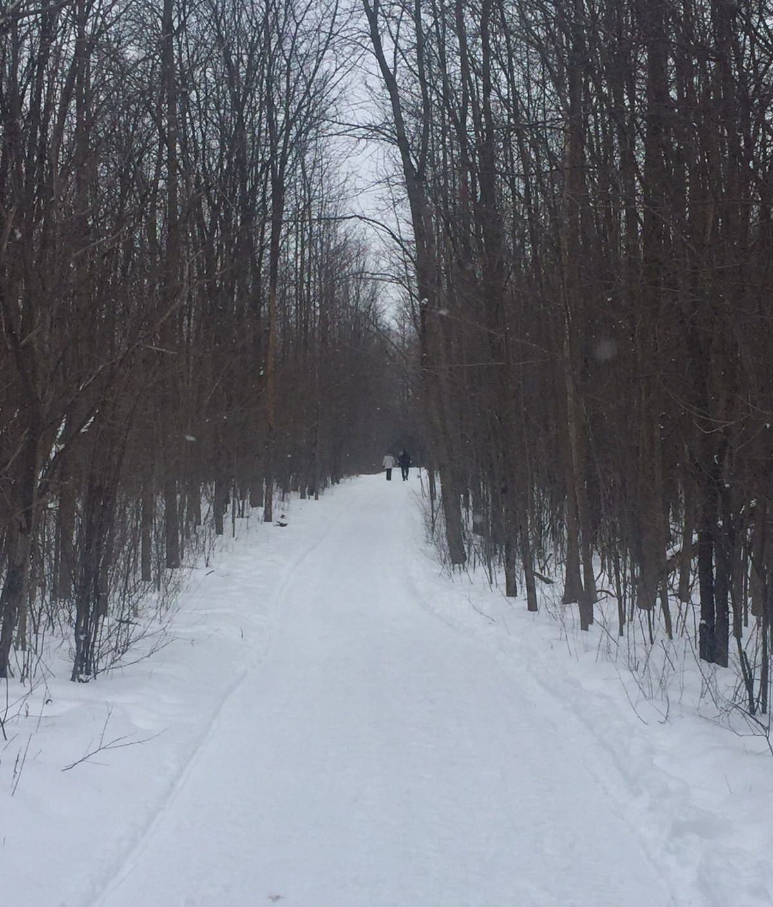

Mt Royal

Mount Royal es una colina grande, de 233 metros de altura en la cima, justo al oeste del centro de la ciudad. Le dio su nombre a Montreal y es un lugar natural popular para pasar el rato, sea cual sea la temporada. Este antiguo volcán de 3 picos alberga muchos animales salvajes. El parque también alberga puntos de referencia y atracciones como Mount Royal Chalet, 2 miradores, Mount Royal Cross, un tubo de nieve, una pista de patinaje y parques infantiles, entre otras atracciones. Cafe des Amis es un restaurante genial en el que puedes almorzar o hacer una pausa al lado del lago Beaver.